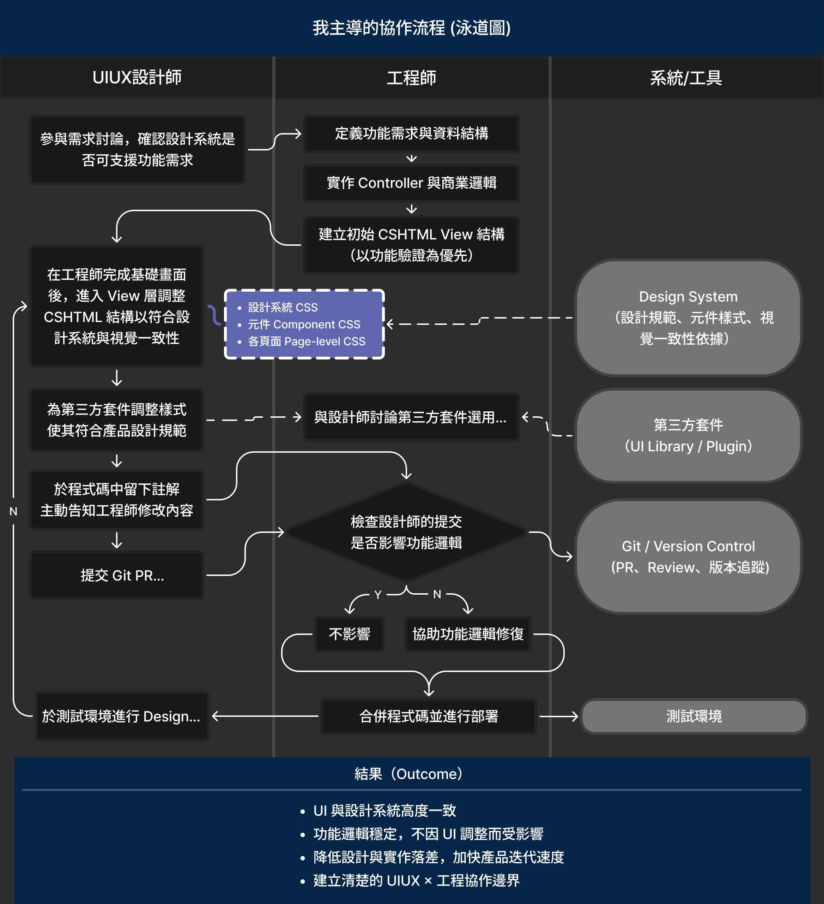
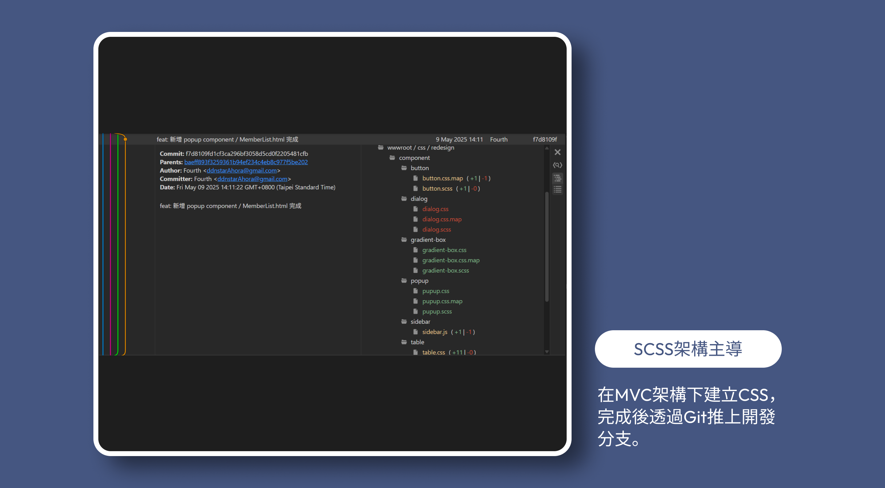
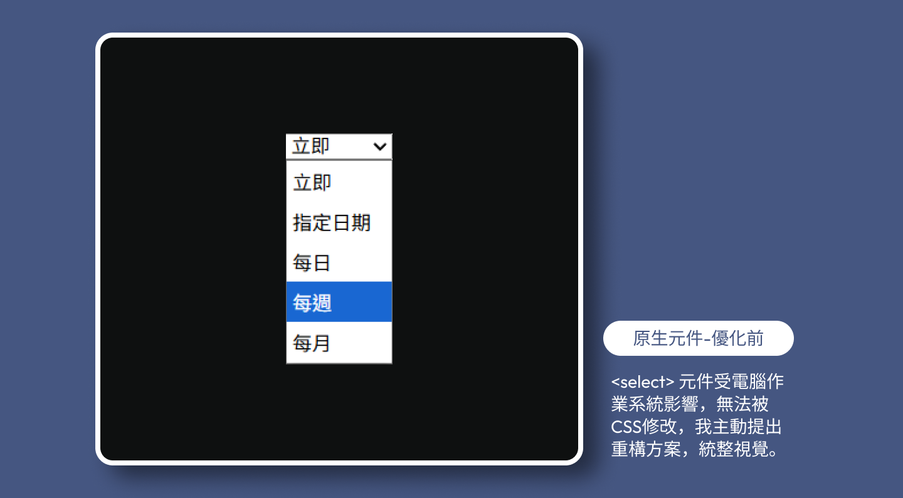

挑戰將預估156天極限壓縮至92天內，針對企業後台進行 UI/UX 重構。透過建立模組化設計系統與導入 Git 協作流程，解決介面與操作流程不一致痛點，成功提升團隊開發效率41%與介面設計100%一致性。
專案簡介
針對企業內部高流量後台進行 UI/UX 重構。本專案挑戰在於預估156天極限壓縮時程內（92天），整合舊有功能並同步開發新需求。
●
挑戰：
需整合既有舊系統與新功能需求，原系統因功能快速搬運導致 UI 邏輯與視覺風格混亂。
●
目標：
在有限資源下，重整 UI 架構並優化操作體驗，使後台系統邏輯與視覺保持一致。
我的角色與貢獻
我是部門唯一UI/UX設計師，主導介面設計一致性與操作邏輯，同時確保專案開發效率提升。我跳脫單純的設計交付，直接參與前端架構開發：
1.
建立設計系統：
使用 Figma 定義規範，並將其轉化為標準化的 SCSS 元件庫。
2.
Git 協作開發：
直接進入 MVC 架構，透過開分支與解決衝突，減少來回溝通成本，提升整體開發效率41%。
3.
全局 UI/UX 實作落地：
直接優化 Razor View (.cshtml) 結構，確保設計稿 100% 還原，並解決 RWD 響應式佈局問題。
專案成員
UI/UX設計師 x1 →我
全端工程師 x2
基於職業倫理，模糊處理並化名公司和專案名稱，揭示內容為已修改的虛構資料。如欲瞭解更多，歡迎透過人力網站與我聯繫。
由我主導的新協作流程：效率提升約 41%
為了將本次專案的高效合作模式延續至未來維護，我將協作經驗系統化，制定了 「設計主導 UI 實作流程」。經量化評估與驗證，此流程透過減少來回溝通修正設計落差與檔案交付整合的時間成本，使整體開發效率提升約 41%。

明確定義協作邊界
為了讓工程師安心放權，我制定了嚴格的「程式碼修改白名單」，確保設計師在優化介面的同時，不影響後端邏輯穩定性：
●
UI/UX設計師權責：
徹底解決舊系統中「同一元件多種樣式」的視覺雜訊，將按鈕、表單、Popup 等元件模組化，確保全站視覺與互動邏輯 100%
統一。
●
工程師權責：
負責功能與資料邏輯。
●
協作機制：
若調整樣式需更動到結構邏輯，我會留下註解並開單通知工程師處理。
實踐：Git同步與模組化SCSS架構
在此標準化流程下，我直接掌管專案的視覺層代碼，確保「設計語言」與「程式語言」的無縫接軌。
●
Git 協作：
透過分支管理與 pull、merge、push以及cherry-pick
等基礎技巧，實現設計與功能的並行開發，大幅縮短功能上線前的UI修正週期。

●
SCSS架構主導：
避免多人維護常見的「視覺偏移 (Visual Drift)」與樣式衝突，我建立了嚴謹的分層管理機制--
1.
設計系統：
定義全域變數，確保設計一致性
2.
Component 元件：
封裝按鈕、表單、彈窗等可複用元件，落實Component-First思維。
3.
頁面樣式 ：
頁面的佈局樣式檔案獨立，並嚴格限制其影響範圍。
●
成效：
確立了 CSS
為「視覺邏輯」的核心地位。由設計師統一維護，不僅消除了傳統流程中的「轉譯落差」，更確保了程式碼的潔淨度與可擴充性。若調整樣式需更動到結構邏輯，我會留下註解並開單通知工程師。
模組化SCSS架構展示
模組化實例展示
Popup 模組化：
針對舊系統中樣式破裂且無法關閉的彈跳視窗，我重構了 HTML 結構並套用標準化 CSS。這不僅修復了 UI 錯誤，更讓未來的 Popup
開發時間縮短至原本的
30%。

Git協作與部署實例展示
桌面端→優化高密度資料呈現
針對後台系統資訊過載的問題，我重新定義了版面配置優先級。
●
導航體驗：
固定 Sidebar 寬度並導入階層式選單，確保導航文字不因內容擠壓而換行，維持清晰的導引功能。
●
表格易讀性：
捨棄強行縮放表格的作法，改為保留欄位最佳寬度並搭配水平滾動 (Horizontal
Scroll)，優先展示重要數據，降低使用者閱讀壓力。


移動端→Table to Card 響應式轉換
為了讓使用者能隨時隨地透過平板或手機操作後台，我制定了明確的RWD策略。
●
移動裝置體驗：
當螢幕小於 767px 時，自動將複雜的表格資料轉換為 卡片式 (Card UI)
排列。這符合移動裝置的垂直瀏覽習慣，確保資訊在窄螢幕上依然清晰可讀。


邏輯統一 →標準化篩選模組換
解決舊系統中篩選功能散落、邏輯不一的問題。
●
架構決策：
考量設計落地性，我主動規劃了兩套實作方案（共用入口 vs
各頁獨立按鈕）並發起技術評估。經與工程師討論後，選定擴充性最佳的「統一篩選側欄」模組。
●
設計落地：
將觸發按鈕固定於 Header，側欄容器共用，內容則由各頁面動態注入。這不僅統一了全站的操作心智模型，也讓程式碼結構更易於維護與擴充。


突破技術限制
JS 套件深度客製 (SweetAlert2)
在整合第三方提示套件 SweetAlert2 時，面臨樣式與結構被封裝在 JavaScript 中，導致標準 CSS 覆蓋失效的難題。
●
協作解決：
我主動提出視覺整合需求，並與工程師協作。由工程師協助梳理JS設定檔結構，創造出讓我能介入的維護空間。
●
直接實作：
我直接進入 JS 檔案中調整樣式參數與 Class
設定，成功將原本風格迥異的套件，「客製化」為符合設計系統規範的標準元件，實現了真正意義上的全站視覺統一。

廣泛覆蓋
表單與功能元件的全面統合
針對select2 多選擇套件、TinyMCE 文章編輯器等常見的第三方套件，我也逐一進行了標準化處理。
●
全面性：
我不僅處理了單一元件，更將所有套件的控制項與導航頁碼納入規範。
●
視覺一致：
透過全域 CSS 覆寫，消除不同套件原生的視覺差異（如邊框顏色、圓角、選取狀態），確保使用者在操作任何功能時，都能獲得一致的視覺回饋。


原生元件重構
突破瀏覽器限制
針對原生 <select>為了克服作業系統渲染差異帶來的視覺斷層，並確保使用者擁有一致的操作體驗，我決定重建核心架構。
●
主動重構：
主動與工程師溝通後，我摒棄原生標籤，使用重寫了符合 Design System 的下拉選單結構。
●
無縫協作：
我交付了包含清楚註解與狀態樣式 (如.active) 的 .cshtml
程式碼，讓後端工程師只需專注於資料綁定與點擊邏輯，成功實現了全站一致的高客製化選單體驗。

這個專案不僅是一次介面重構，更是協作模式的革新。
我跳脫了傳統設計師的角色邊界，透過 Git 同步開發 與 程式碼實作，成功打破了「設計交付 vs 工程實作」的高牆，並具體解決了三大問題：
●
降低溝通成本：
直接修正 UI 細節，減少來回確認與製作標註文件的時間。
●
消除落地落差：
確保最終產品的視覺與互動細節，與設計稿分毫不差。
●
提升團隊效率：
讓工程師專注於後端邏輯，讓設計師全權掌握視覺品質。
我已準備好，將這份跨領域的協作價值帶入您的團隊。